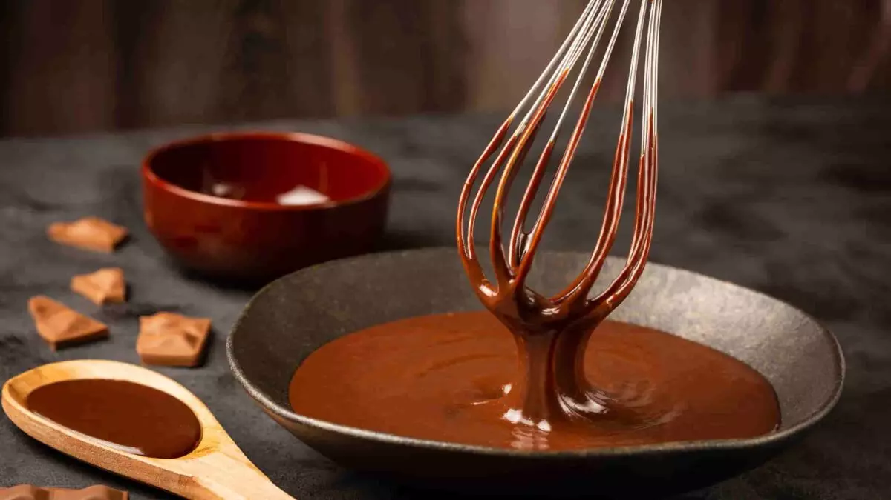

Chocolate
Acredito que voçê que está vendo isso conheça o Chocolate, mas você sabe como fazê-lo? Caso não saiba, vamos
aprender?

Ingredientes
- 200 gramas de cacau torrado
- 200 gramas de Manteiga de Cacau
- 200 gramas de Açúcar Demerara Orgânico
- 1 colher de chá de Extrato de Baunilha
- 1 pitada de Sal
Modo de Preparo
Derreta a manteiga de cacau
- Moa o cacau torrado
- Combine a manteiga de cacau derretida e os nibs de cacau moídos
- Adicione o açúcar e o sal
- Adicione o extrato de baunilha ou especiarias (opcional)
- Despeje em moldes
- Deixe esfriar e endurecer